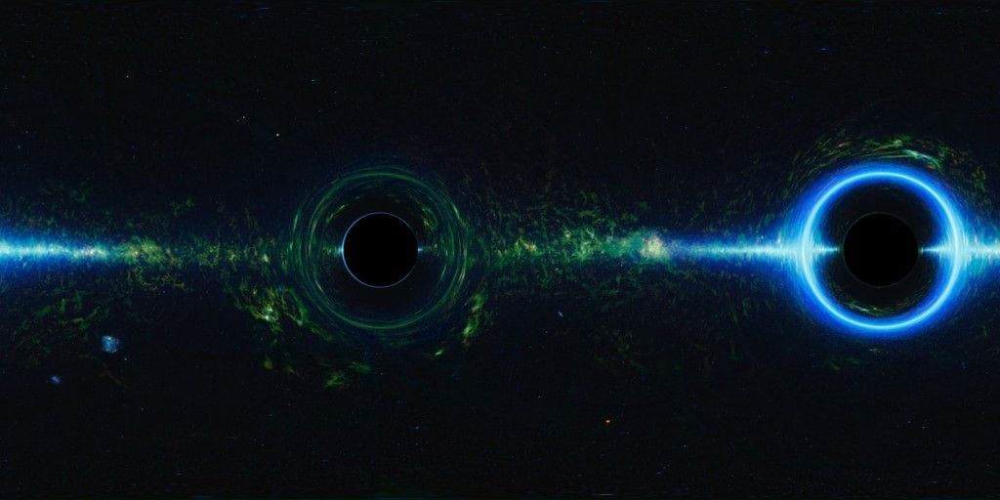
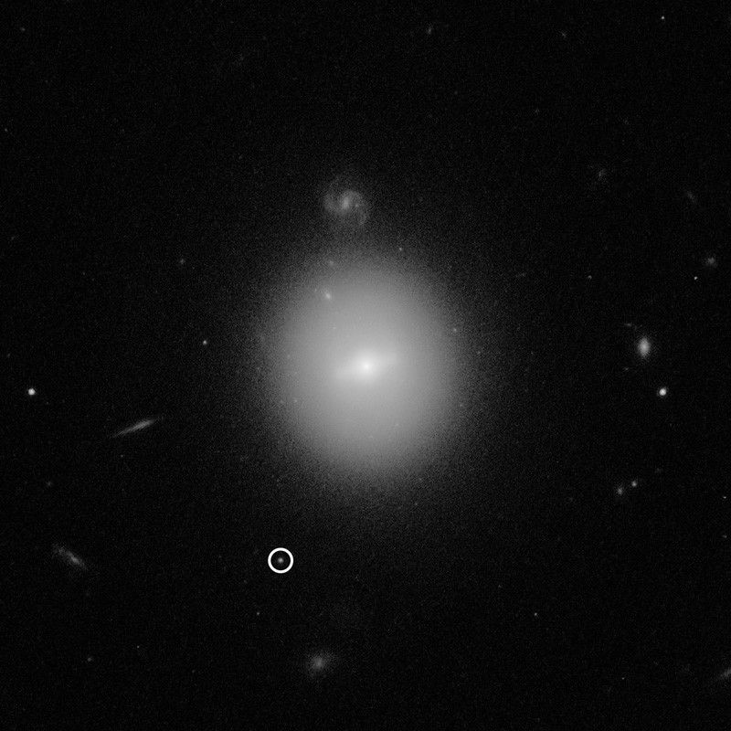
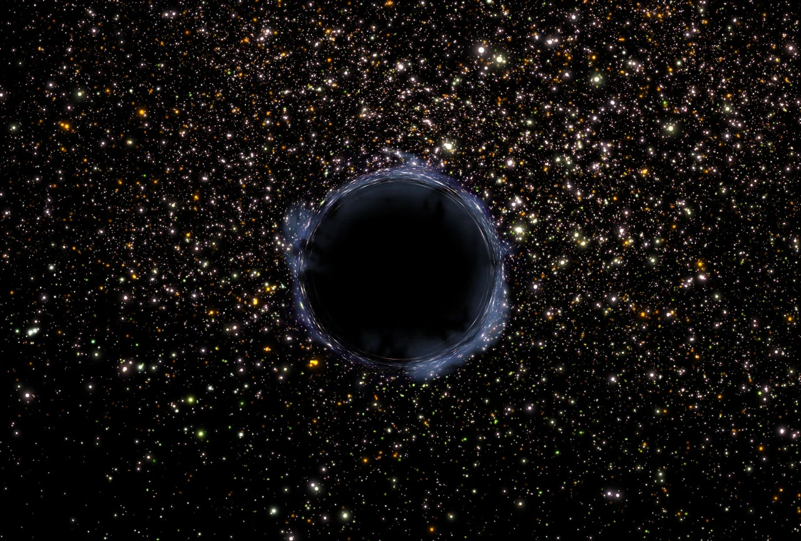

2. Types of Black Holes
- Stellar-Mass Black Holes: Formed from collapsing massive stars.

- Supermassive Black Holes: Found at galaxy centers, millions to billions of times the Sun’s mass.

- Intermediate Black Holes: The middle category, formed from merging smaller black holes.

- Primordial Black Holes: Hypothetical black holes that might have formed in the early universe.
